PosPro computes the trajectory of a Canadian Lidar mobile mapper: where the Certus GNSS/INS was, and how it was oriented, at every moment of a drive. It reads the mapper's captures (.clraw) or the Certus logs (.anpp) directly, combines the raw IMU and the raw satellite observations of both Certus antennas with base station data, and runs the inertial filter forward and backward over the drive. The two passes are combined into one smoothed trajectory, which you check on the map and in plots, clean up in Trajectory Review and export as SBET/SMRMSG, text, GeoPackage or GPX.
PosPro is stage 01 of the DCS chain. Every time you process, PosPro also publishes the trajectory for the next stages: AlignPro uses it to solve the Lidar mounting (boresight), and CloudPro uses it to georeference the point cloud. You do not export anything by hand for them.
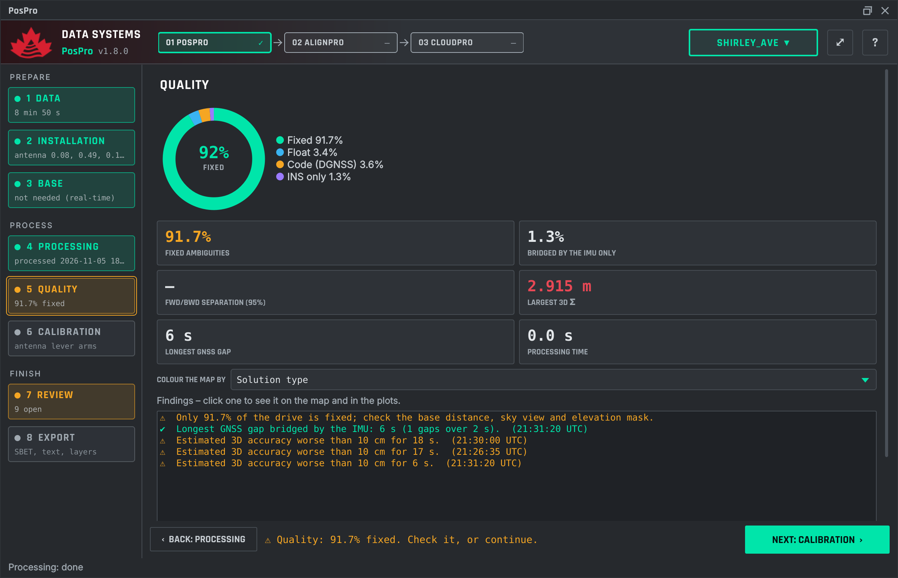
| Details | |
|---|---|
| Rover data | Mapper captures (.clraw, also unfinished .clraw.partial files) and Certus logs (.anpp). PosPro uses the Certus packets 20 (real-time solution and attitude), 28 (raw IMU), 60 (raw satellite observations), 61 (GPS ephemeris), 185 (installation) and 196 (dual-antenna set-up), and the mapper's hardware.json inside the capture. |
| Base stations | RINEX observation files (also Hatanaka-compressed and gzipped), or downloads from the base-station finder. Base positions from the RINEX header, typed in, built-in PPP or NRCan CSRS-PPP. |
| Processing | Tightly coupled GNSS/INS (both antennas), loosely coupled, GNSS only, or the Certus real-time solution. Differential (PPK) or precise point positioning (PPP). Forward and backward passes, combined. |
| Checks | Quality summary and findings, map layers coloured by solution type, accuracy or separation, quality plots, Trajectory Review, antenna lever-arm solver. |
| Output | SBET + SMRMSG, text files with the columns you choose, GeoPackage layer, GPX track, export note; the published trajectory for AlignPro and CloudPro. |
Processing runs in a separate engine program (with RTKLIB inside), so a fault in processing never closes QGIS. The forward and backward passes run at the same time.
Read How a trajectory is made and The workflow and why it is in this order once: they explain what every setting does to the accuracy. Best practices lists what to do in the field and in the office. The step chapters then follow the window, step by step; each starts with why the step comes where it does. The Index at the end lists every button and setting with the section that explains it.
A trajectory is the position and orientation of the Certus at every moment of the drive. PosPro builds it from two kinds of measurement that fail in opposite ways, and from what you tell it about the vehicle. Knowing how they fit together explains every setting in this guide and why the steps come in the order they do.
| GNSS (the two antennas) | IMU (inside the Certus) | |
|---|---|---|
| Measures | Distances to satellites: code (metres) and carrier phase (millimetres, once its whole number of cycles, the ambiguity, is known) | Acceleration and turn rate, 200 times a second |
| Strength | Errors do not grow with time: centimetres anywhere the sky is open | Smooth, never drops out, gives roll, pitch and heading |
| Weakness | Blocked by bridges, trees, buildings; carrier phase must be fixed again after every interruption | Errors grow with time when nothing corrects them (metres after a minute) |
The Kalman filter combines them: the IMU carries the trajectory from one moment to the next, and every GNSS measurement pulls it back to where the satellites say it is. In tight coupling (PosPro's default) the filter uses each satellite's raw observations from both antennas directly, so even two or three satellites under trees still help; loose coupling only uses complete GNSS positions.
Most GNSS errors (satellite orbits and clocks, the ionosphere and troposphere) are almost the same for two receivers a few kilometres apart. Processing the rover's observations against a base station's (double differences, PPK) removes them and makes the carrier-phase ambiguities fixable: that is what turns metres into centimetres. Two consequences:
A filter only knows the past. Driving forward, it enters a GNSS gap well known and leaves it with its largest error; running the same data backward, the opposite. Combining the two passes (weighting each by its own accuracy) gives the smallest error everywhere, and halfway through a gap it is much better than either. The separation between the passes is also the most honest quality check there is: two independent solutions that agree to 2 cm are right to about 2 cm; where they disagree, one of them has a wrong fix.
Each item below adds to the final error. The order of the steps is the order in which they are removed:
| Source | Typical size if ignored | Removed in |
|---|---|---|
| Antenna lever arms (where the antennas are, from the Certus) | The full error of the offset, in every direction the vehicle turns; swapped antennas: about 1 m | Installation (measured, checked), Calibration (solved) |
| Base station position | Up to a few metres, the same everywhere | Base (PPP or CSRS-PPP) |
| Distance to the base, atmosphere | 1 mm per km, more in disturbed ionosphere | Base (choose the closest), Processing (atmosphere states) |
| Wrong or unfixed ambiguities | Decimetres to metres | Processing (tight coupling, both antennas, both passes), Quality, Review |
| GNSS gaps (IMU only) | Grows with the gap: centimetres for seconds, decimetres after a minute | Processing (combination), Review (bridge with the IMU) |
| Vehicle frame (IMU mounting, wheel constraints) | Small heading and pitch biases, worse in gaps | Installation (rear axle, IMU mounting correction) |
PosPro's eight steps are grouped in three phases. Each step depends on the ones before it, and the step bar on the left, the Next button and the step notes guide you through them in order.
In the window, the steps sit on the left under their phase. Each shows its state in colour with a short note under its name:
Under the open step, the ‹ Back / Next › bar says in one sentence whether the step is done and what to press; optional steps can be skipped.
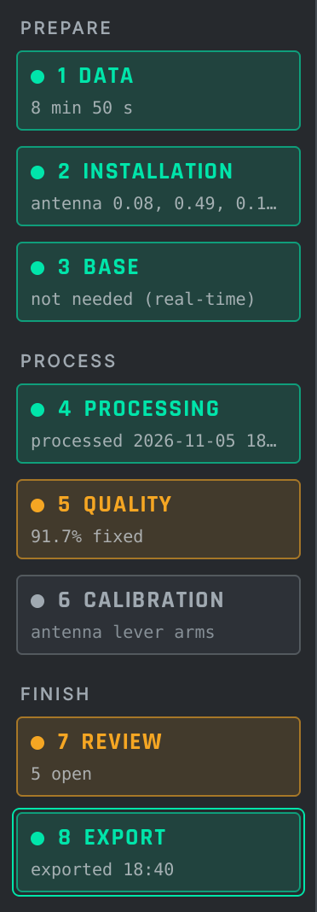
| Step | Why it comes here |
|---|---|
| 1 Data | Everything else is computed from the rover files. Reading them first shows how complete they are (IMU and satellite coverage, gaps in the recording) before any time is spent on them. |
| 2 Installation | The antenna offsets are used in every epoch of processing, and a wrong offset (or swapped antennas) cannot be fixed afterwards without processing again. They come straight from the capture, so this is mostly a check, and Check antennas confirms them from the data itself. |
| 3 Base | The base position decides where the whole trajectory sits. It is computed (PPP) before processing, because every PPK solution is relative to it. |
| 4 Processing | Runs once everything it needs is right. |
| 5 Quality | Judges the result before anything is built on it: the share of fixed ambiguities, the forward/backward separation and the gaps say whether to go on, change a setting, or check the inputs. |
| 6 Calibration | Solving the lever arms needs a processed drive and means processing again. Done after a first good processing and before any review, it leaves no hand edits to lose. |
| 7 Review | Hand edits belong to one processed trajectory, so they come last; processing again takes hand selections off the list. |
| 8 Export | Only for other software: AlignPro and CloudPro already read the trajectory PosPro publishes every time it processes or applies a review edit. |
Most of a trajectory's accuracy is decided before PosPro runs: by how the data were recorded. These are the practices used across the industry for GNSS/INS mobile mapping, and how PosPro supports each.
| Practice | Why |
|---|---|
| Measure the antenna and Lidar offsets to the Certus reference point to 1 cm, and enter them in the mapper (Settings › Hardware) | Offsets go straight into every position. PosPro reads them from the capture; Check antennas confirms GPS1 and GPS2 from the data. |
| Check that PRIM and SEC are plugged into the right antennas | Swapped antennas move the trajectory by the antenna separation and turn the Certus's heading 180°. |
| Start and end with 3–5 minutes static in the open, engine running | Lets the filter settle its biases and fix the ambiguities before the drive, and gives the backward pass the same at the end. |
| Drive a few turns and figure-eights early on | Makes heading and the IMU biases observable; the lever-arm solver needs turns. |
| Log the base for the whole drive plus 10 minutes before and after, at 1 s; within 10–20 km where possible | The base must cover every rover epoch; accuracy falls about 1 mm per km; 1 s matches the rover's whole-second epochs. |
| Record the mapper's navigation recording (mapper 2.10), not only the survey lines | One continuous recording from start to end processes as one trajectory that covers every line, static periods included. |
| Use the mapper's recommended Certus outputs | Raw IMU at 200 Hz and raw observations of both antennas at 8 Hz on whole seconds are what tight coupling needs (see Recording settings). |
| Avoid long GNSS outages where you can; pass through them at a steady speed | IMU-only error grows quickly with time; the wheel constraints help most at constant speed. |
| Practice | Why |
|---|---|
| Compute the base position with CSRS-PPP (best, after about 24 h when final orbits exist) or built-in PPP; never leave the RINEX header position | The header position is often metres off; every point of the trajectory inherits it. |
| Use tight coupling with both antennas and both passes | The most observations, the best bridging of gaps, and the separation check. |
| Accept a trajectory when: fixed ≥ 95 %, forward/backward separation 95 % below 5 cm, no IMU-only gap longer than about 30 s | The common acceptance criteria for survey-grade mobile mapping; Quality shows each. |
| Fix inputs, not results: a bad base file, wrong offsets or a wrong setting are fixed and processed again before any review | Review edits are for what the data cannot give (a wrong fix under trees), not a substitute for correct inputs. |
| Solve the lever arms once per installation, from a drive with turns, and keep the measured values when the solver disagrees by more than a few centimetres without a reason | A solved value is only as good as the drive it came from. |
| Prefer bridging with the IMU over interpolation for anything longer than a few seconds | The IMU knows the turns and bumps; a curve guesses them. |
| Keep the export note with every exported trajectory | It records the frame, epoch, reference point and time base, which the next user needs. |
Below the steps, the bottom of the window holds the status line (the last message, or the stage of the job that is running), a progress bar and a red STOP button while a job runs, and short messages (green, amber or red edge) that disappear after a few seconds. Warnings and errors also go to the QGIS message bar and to Show the log. Only one job runs at a time; starting another while one runs gives Wait for the current job to finish (or cancel it).
The default window is 1400 × 950 pixels; docked left or right it is 720 pixels wide.
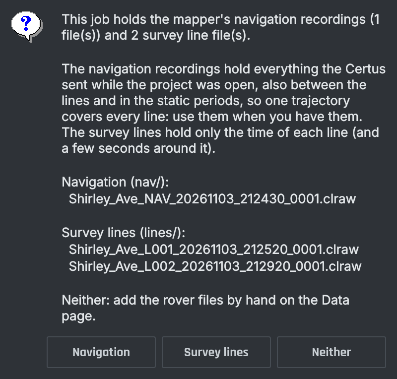
Navigation or survey lines? A mapper 2.10 navigation recording holds everything the Certus sent while the mapper project was open: the static periods before and after the drive and the time between the lines as well as the lines themselves. Processed once, it gives one trajectory that covers every line, which suits PPK and tight coupling best. The survey lines hold only each line and a few seconds around it. Files are read in recording order, whatever their names. The navigation recording's hardware record has no vehicle, rear axle or coordinate system; PosPro takes those from a survey line of the same job.
PosPro keeps its own settings in 01_PosPro/pospro.json and its work in 01_PosPro/work/ (extracted data, intermediate files, results). Shared facts that the other stages need (coordinate frame, base station, antenna offsets, vehicle, the capture's hardware record, the list of captures) are written into the shared project whenever you change them in PosPro.
The Data page holds the rover files, what they contain, the time range to process and the satellite ephemeris.
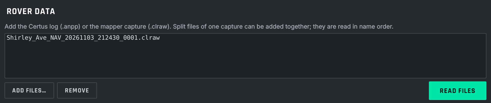
.anpp) or mapper captures (.clraw, .clraw.partial). Split files of one capture can be added together; they are read in name order. Adding files clears the time range and reads the files at once.A file that is no longer where it was shows in red (File not found on hover). After reading, PosPro fills the Installation offsets from the capture if they are still empty, with the message Installation offsets filled from the capture (…).
After reading, this box lists what PosPro found. Lines in amber point at something to check.
| Line | Shows |
|---|---|
| Recording | Start and end (UTC) and duration of the IMU data; for captures without raw IMU, of the Certus real-time solution (the line says so). |
| IMU (packet 28) | Number of samples, rate and gaps (amber when there are gaps). Notes when samples before GNSS time was valid were skipped, or when IMU time stamps were shifted to match packet 20. |
| GNSS (packet 60) | Epochs, interval and the mean number of satellites, then the signals recorded. Amber notes: epochs not on whole seconds (base data are then interpolated; set the Certus to 125 ms for whole-second epochs), or GLONASS off on the Certus. none – raw observations were not recorded when the captures hold no raw observations; the Data step then turns red (no raw GNSS) and only the real-time mode can run. |
| Ephemeris (packet 61) | The number of GPS ephemerides the Certus recorded. |
| Checksum errors | Shown only when packets failed their checksum. |
| Mapper hardware | hardware.json found in the capture: the mapper's offsets can be used on the Installation page. |
Start and End limit the processing to part of the capture, for example to leave out a long wait at the start. They cannot go beyond the recording. Whole capture clears the limits. The same range is used by Data-page time range only on the Export page.
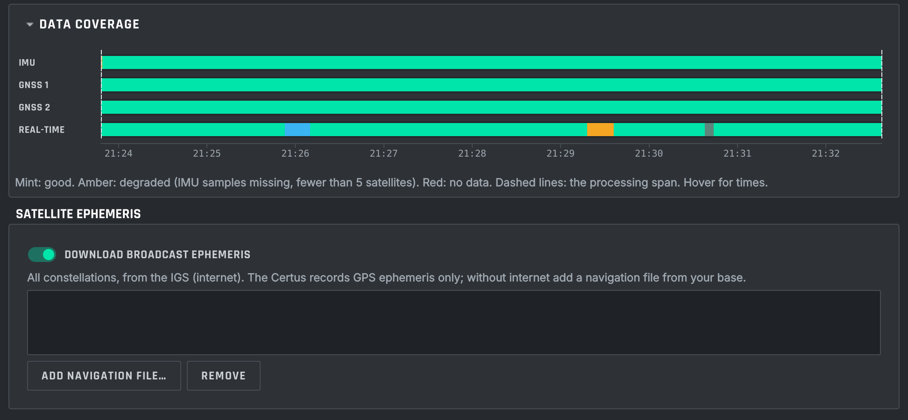
One bar per data stream over the time of the capture: IMU, GNSS 1, GNSS 2 (when the second antenna was recorded) and Real-time. Mint is good, amber degraded (IMU samples missing, fewer than 5 satellites), red no data. The real-time bar takes the colour of the Certus fix type (RTK fixed mint, RTK float blue, DGNSS or SBAS amber, 2D/3D red). Dashed lines mark the processing span; hover a bar for times. The Base page shows the same bars with one more per base station.
pospro_cache folder of your QGIS profile.Offsets are in metres from the Certus reference point, in the vehicle frame: Forward +, Starboard +, Down +. This is the same frame and the same values as the mapper's Settings › Hardware, and the page is laid out the same way. The offsets are filled from the capture when the rover files are read.
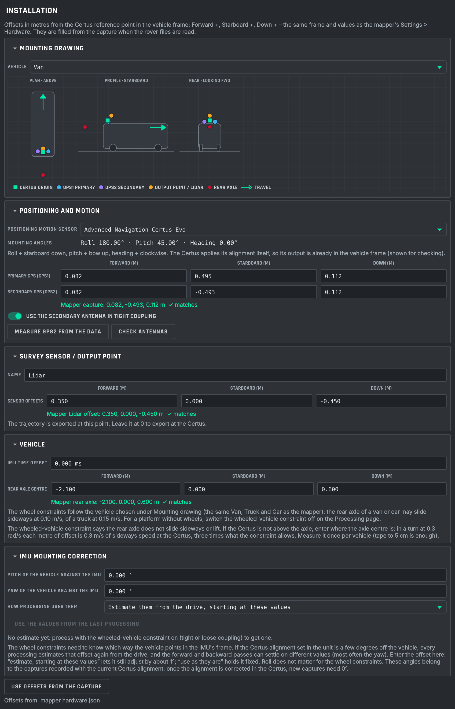
hardware.json in the capture. The green notes confirm that the values match the capture.Choose the Vehicle: Van, Truck or Car, the same vehicles and sizes as in the mapper (Settings › Hardware). When the rover files are read, the vehicle recorded in the capture is chosen for you. The vehicle also sets the wheel constraints used in processing (below). The drawing shows the vehicle from above, from starboard and from the rear, with the Certus origin, GPS1, GPS2, the output point (Lidar) and the rear axle as you enter them, so a sign error or a swapped axis shows at a glance.
If the PRIM and SEC antenna cables were plugged in the wrong way round, GPS1 (the primary receiver) is really on the secondary antenna, and every offset is wrong by the whole distance between the antennas. The Certus does not notice: its own heading simply turns 180°. Check antennas finds it from the recorded data, without a base station:
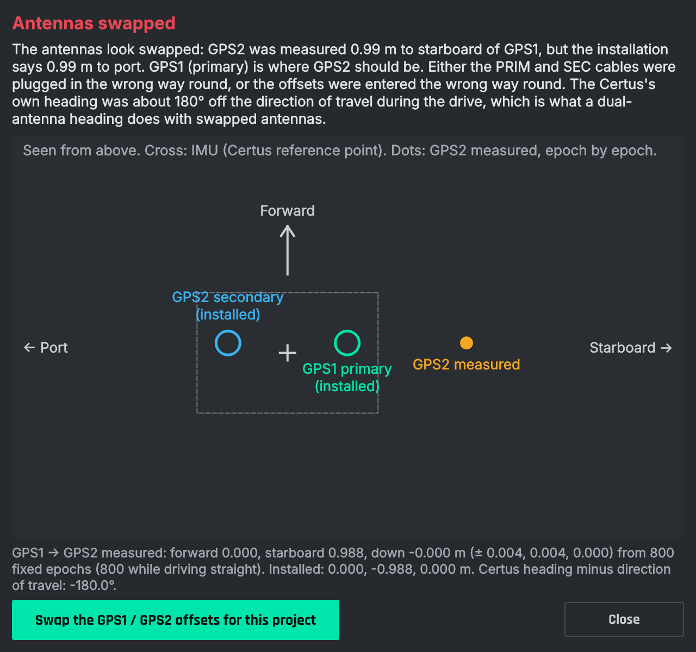
When the antennas look swapped, Swap the GPS1 / GPS2 offsets for this project processes the data as it was recorded: GPS1 gets GPS2's offset and the other way round, and when the Certus heading was turned 180° the INS is aligned from the direction of travel instead (Processing › Alignment From motion). Process again afterwards, and fix the cables on the unit for the next captures. In the Trajectory editor the measured GPS2 positions are drawn along the track as well (see The Trajectory editor).
A Name (for example Lidar) and the Sensor offsets of the point you may want the trajectory exported at. It appears as a choice under Position of on the Export page. Leave it at 0 to export at the Certus. The published trajectory for AlignPro and CloudPro is always at the IMU centre, whatever you enter here.
The wheel constraints need to know which way the vehicle points in the IMU's frame. When the alignment set in the Certus is a few degrees off how it is really mounted, PosPro estimates the difference (pitch and yaw) during every processing and writes it to the log (vehicle frame against the IMU: pitch … yaw …). The forward and backward passes can settle on different values, most often in yaw. Here you set them once:
Use offsets from the capture (shown when the capture holds offsets) sets GPS1, GPS2, the Lidar offset, the rear axle and the vehicle from the mapper's hardware.json, or else from the Certus installation record (packet 185) and dual-antenna set-up (packet 196), and lists what it set. The line under it says where the offsets came from (Offsets from: mapper hardware.json, or Offsets entered by hand). The Installation step turns amber while the GPS1 offset is zero.
Differential processing (PPK) and tight coupling need one base station that covers the whole drive. Every point of the trajectory inherits the base position's error and its frame, so give the base a precise position before processing. The Base page is not needed for PPP or for the real-time mode (the step then reads not needed (PPP) or stays grey).
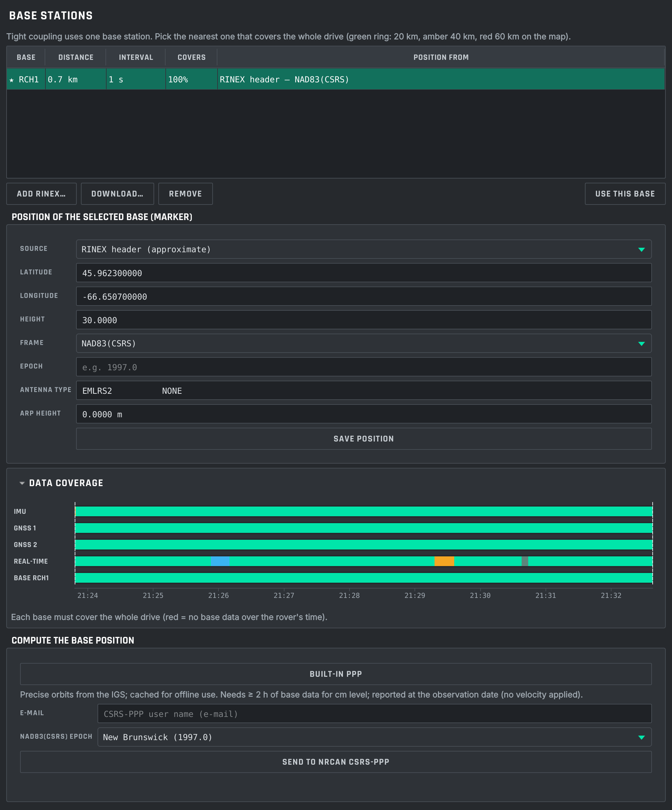
| Column | Shows |
|---|---|
| Base | The station name. ★ marks the base used for processing. |
| Distance | From the drive: green up to 20 km, amber up to 40 km, red beyond. |
| Interval | The observation interval of the file. |
| Covers | The share of the rover's time that the base file covers. It should be 100 %. |
| Position from | RINEX header, entered, built-in PPP or CSRS-PPP, with the frame and epoch. |
.obs .rnx .crx .??o .??d .gz). Select several files of the same station to add them as one base; their observations are merged (they must list the same observation types, otherwise add them as separate bases). Compact (Hatanaka) RINEX is decompressed automatically.The bases also appear on the QGIS map, in the group PosPro: <project>: the base used as a large red triangle, the others grey, with distance rings at 20, 40 and 60 km.
The coordinates are those of the marker. Choose the Source (RINEX header (approximate), Entered / published, Built-in PPP, NRCan CSRS-PPP), enter Latitude and Longitude in decimal degrees and the ellipsoidal Height, the Frame (NAD83(CSRS), ITRF2020 / IGS20, WGS 84, NAD83(2011)) and its Epoch, the Antenna type (from the RINEX header; used with the IGS antenna calibrations) and the ARP height, then press Save position. The frame and epoch of the base become those of the project: the trajectory and every export are in that frame.
| Button | Use when | Result |
|---|---|---|
| Built-in PPP | No CSRS-PPP account, or offline once the products are cached | Static PPP with downloaded precise orbits and clocks (ESA, IGS or CODE; finals first, then rapids) and the IGS antenna file. ITRF2020 at the observation date, transformed to NAD83(CSRS) at the same date when the base frame is NAD83(CSRS); no velocity applied. Needs at least 2 hours of base data for centimetre level; PosPro warns when the file is shorter. |
| Send to NRCan CSRS-PPP | Internet and an NRCan account | Enter the E-mail you use as your NRCan user name and choose the NAD83(CSRS) epoch: New Brunswick (1997.0), Federal (2010.0) or Observation date. PosPro sends the file, waits for the result and enters the NAD83(CSRS) position at that epoch. |
The result of each computation is listed under the buttons (built-in PPP: date, hours of data, products and σ). For work tied to NAD83(CSRS) epoch 1997.0, use CSRS-PPP with that epoch: the built-in PPP gives the position at the observation date, which differs by the crustal motion since 1997.
Download… opens PosPro – base stations near the drive: a map of the reference stations within 150 km of the drive, with the drive itself in red and dashed rings at 20, 40 and 60 km. Read the rover files first; the map centres on the drive. The finder needs the internet.
| Network | Symbol | Download from PosPro |
|---|---|---|
| NRCan CACS, NS active control, NRCan regional | squares (red, pink, dark red) | Yes, free |
| IGS | mint star | Yes, free |
| NOAA CORS | blue triangle | Yes, free |
| Can-Net, SmartNet, BrandtNet, TopNET, GEODNET, Other RTK | diamond, pentagon, hexagon, triangle, circle, cross | Through the network's portal (Open portal, then Import file…), or with your account where the network allows it |
work/base folder).Station lists are cached for a week; Refresh station lists loads them again. The commercial stations come from NRCan's list of networks tied to NAD83(CSRS), so they cover Canada only.
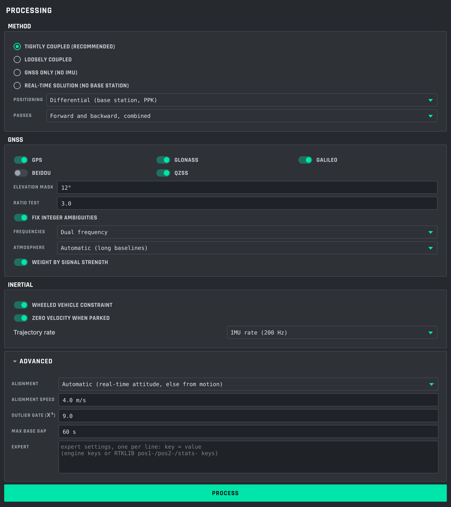
| Method | What it does | Needs |
|---|---|---|
| Tightly coupled (recommended) | Raw carrier phase and code from rover (both antennas) and base go straight into the inertial filter. Keeps fixing with fewer than 4 satellites and repairs cycle slips with the IMU. | Raw IMU, raw GNSS, a base station with a position |
| Loosely coupled | GNSS positions are computed first (RTKLIB) and then blended with the IMU. | Raw IMU, raw GNSS; a base for PPK, or PPP without a base |
| GNSS only (no IMU) | The RTKLIB kinematic solution, forward and backward, combined. No attitude: roll and pitch are 0 and the heading follows the direction of travel. For comparison, or when there is no IMU data. | Raw GNSS; a base for PPK, or PPP |
| Real-time solution (no base station) | The Certus's own real-time trajectory (packet 20), cleaned in Trajectory Review. For when there is no base station, or RTK was used in the field. | The real-time solution in the captures |
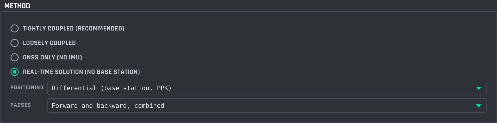
key = value. Keys starting with pos, stats, misc or ant go to RTKLIB; all others go to the inertial engine. Lines starting with # are ignored.Press Process. PosPro first checks that the rover files are read and, for PPK and tight coupling, that a base is chosen (and asks when its position is only from the RINEX header). Then, in the background:
The status line shows the stage and the progress bar the progress; STOP ends the run. The project box turns red and the PosPro workflow box reads running; another computer cannot process the same stage at the same time (… is being processed by … on … since …). When the run finishes, the Quality page opens. A run that fails or is stopped keeps the earlier results, and the PosPro box shows failed.
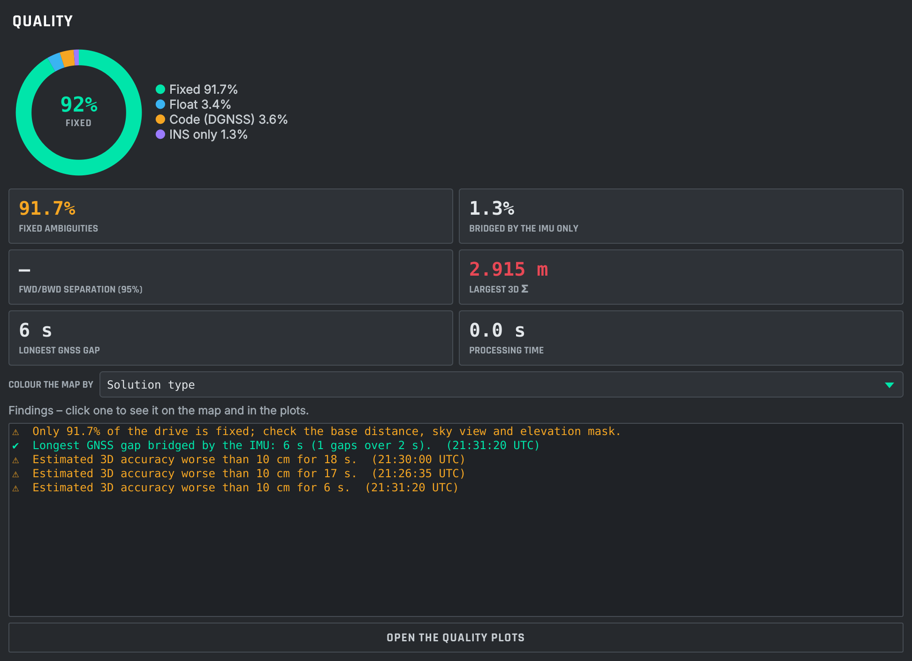
The donut shows the share of each solution type (Fixed mint, Float blue, PPP light blue, Code (DGNSS) amber, Single red, INS only violet). The cards:
| Card | Green | Amber | Red |
|---|---|---|---|
| fixed ambiguities | ≥ 95 % | ≥ 75 % | below |
| bridged by the IMU only | share of the time without GNSS updates | ||
| fwd/bwd separation (95%) | < 5 cm | < 20 cm | above |
| largest 3D σ | < 10 cm | < 50 cm | above |
| longest GNSS gap | the longest stretch bridged by the IMU only | ||
| processing time | of the last run | ||
A good mobile-mapping trajectory is over 95 % fixed, has a forward/backward separation under 5 cm (95 %), and no 3D σ worse than 10 cm outside GNSS gaps. The Quality step is green from 95 % fixed, amber below.
A plain-language list: the share fixed, the longest GNSS gap bridged by the IMU and the number of gaps over 2 s, the forward/backward separation (95 % and maximum), up to five stretches where the passes disagree by more than 10 cm, up to three stretches where the estimated 3D accuracy is worse than 10 cm, and the IMU biases estimated at the end. Findings with a time show it in UTC; click one to mark that place on the map and zoom the quality plots to it (the plots open if they are closed).
PosPro puts its layers in the group PosPro: <project> of the QGIS layer panel: Real-time track (what the Certus computed in the field, shown as soon as the files are read), Base stations and Base distance rings, Trajectory (one point per second, with the time, solution, satellites, height, attitude, speed, σ, separation and gap as attributes), Trajectory line and, after Trajectory Review, Review windows. Colour the map by colours the trajectory points by Solution type, Estimated accuracy (3D σ) or Forward/backward separation (classes < 2 cm, 2–5, 5–10, 10–30, 30–60, > 60 cm).
Open the quality plots opens PosPro – quality plots in a window of its own (the same standard window as PosPro: floating by default, docked from its title-bar menu).
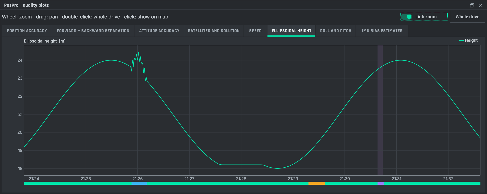
The tabs: Position accuracy (σ north, east, down), Forward − backward separation (north, east, down, where both passes have a solution), Attitude accuracy (σ roll, pitch, heading), Satellites and solution (satellites and the ambiguity ratio ÷ 10), Speed, Ellipsoidal height, Roll and pitch and IMU bias estimates (accelerometers in mg, gyros in deg/h).
Wheel to zoom, drag to pan, double-click (or Whole drive) for the whole drive. Hover for the values at a time. A click marks the time with an orange line and shows that place on the map with an orange circle. With Link zoom on, all tabs follow the same time range. Under every plot a strip shows the solution type in the map colours, and GNSS gaps (INS only) are shaded violet.
The lever-arm solver estimates the IMU-to-antenna offsets from the drive itself and shows them beside the ones you entered, so a mis-measured antenna shows up before it spoils a survey. It works on data you have already processed; measure the offsets as well as you can first, and let the solver check and refine them.
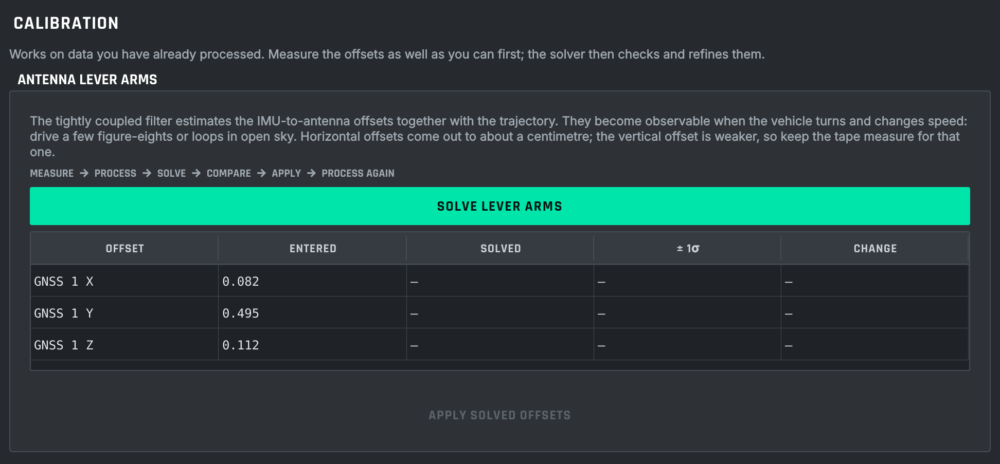
The offsets become observable when the vehicle turns and changes speed: drive a few figure-eights or loops in open sky. Horizontal offsets come out to about a centimetre; the vertical offset is weaker, so keep the tape measure for that one. A straight drive cannot separate the forward offset from the IMU's own errors.
Trajectory Review finds where the trajectory misses your limits, lets you look at each place in the Trajectory editor, on the map and in the plots, and records what you decide for each. Decisions are kept with the project and carried to AlignPro and CloudPro.
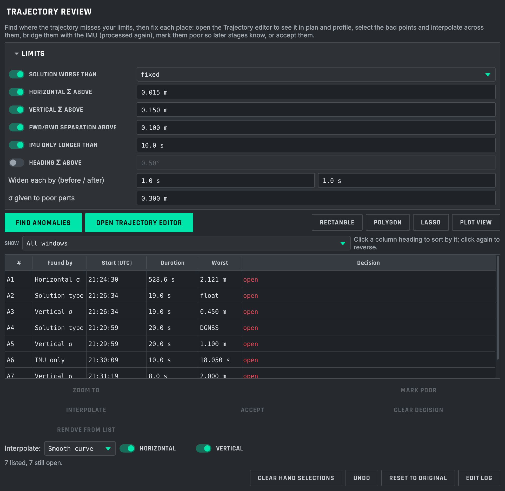
| Limit | Default | Finds |
|---|---|---|
| Solution worse than | fixed (on) | Samples worse than fixed, float, DGNSS or single (IMU-only samples are left to the IMU limit) |
| Horizontal σ above | 0.100 m (on) | Horizontal accuracy worse than the limit |
| Vertical σ above | 0.150 m (on) | Vertical accuracy worse than the limit |
| Fwd/bwd separation above | 0.100 m (on) | The passes disagreeing horizontally by more than the limit |
| IMU only longer than | 10.0 s (on) | GNSS gaps longer than the limit |
| Heading σ above | 0.50° (off) | Heading accuracy worse than the limit |
| Widen each by (before / after) | 1.0 s / 1.0 s | A margin added to each window, because a drop in quality is often reported a little late |
| σ given to poor parts | 0.300 m | The σ that Mark poor gives |
Flagged samples less than 1.5 s apart join into one window.
Processing finds the anomalies by itself with the limits above, so the list is ready when processing ends. Hand selections belong to the trajectory they were drawn on: processing again takes them off the list (decisions already made on them stay). Remove from list takes the selected S rows off, and Clear hand selections takes them all off.
Show narrows the list to the open windows, the ones found by the limits (A), the hand selections (S) or the decided ones; click a column heading to sort by it (again to reverse) – for example by Worst to look at the largest first. To get rid of old hand selections: Show › Selected by hand, select them (Ctrl+A) and Remove from list, or Clear hand selections.
The list shows the window (A found, S selected by hand), what found it, the start (UTC), the duration, the worst value and the decision (open in red until you decide). The windows are drawn on the map in the layer Review windows: red open, blue GNSS excluded, amber poor, violet interpolated, mint accepted. Double-click a row, or Zoom to, to see it on the map and in the plots.
Open Trajectory editor (next to Find anomalies) opens the processed trajectory in its own window: the plan view on top, the height profile (height against time) below, and on the right the sections of the job and the review list. Everything you decide here is the same decision as on the Review page, so both always agree.
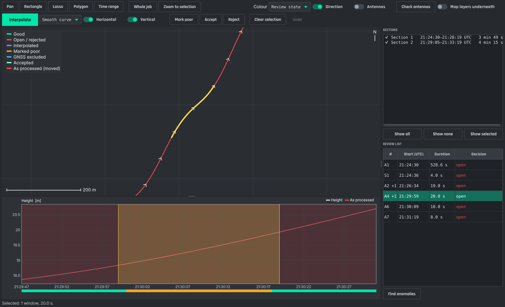
The views are linked. Move the mouse over the plan and the profile shows a line at that moment with its height; move it over the profile and a ring marks the same place in the plan. Click a point in either and it is marked in both. Zoom or pan the plan (wheel, drag) and the profile shows the time of what is in view; zoom the profile and the plan follows when that stretch is off screen. The line under the views gives the time, position, height, solution type and review state under the mouse.
| Tool | Use |
|---|---|
| Pan | Drag to move, wheel to zoom, click a point to mark it in both views, double-click to see the whole job. The middle mouse button pans with any tool. |
| Rectangle, Lasso, Polygon | Select bad points in the plan view (polygon: click the corners, right-click or double-click to finish; Esc cancels). The selection is shown in both views; parts less than 3 s apart become one window. |
| Time range | Drag across the profile to select a time range, e.g. a height spike. |
| Whole job, Zoom to selection | Fit both views to the shown sections or to the selection. |
| Colour | Review state: mint good, red open or rejected, violet interpolated, amber poor, blue GNSS excluded, pale mint accepted. Solution type: the mapper's solution colours. Positions the edits moved are also drawn as they were processed, in faint red. |
| Direction | Chevrons along the track pointing the way the vehicle drove (on by default). |
| Antennas, Check antennas | Antennas draws GPS1 (mint) and GPS2 (blue) along the track from the Installation offsets, and at the point under the mouse or clicked, the vehicle: the IMU joined to both antennas. After Check antennas (see Installation › Checking the antennas) the GPS2 positions it measured are drawn as orange dots: on the blue line when all is well, on the other side of GPS1 when the antennas are swapped. |
| Map layers underneath | Draws the layers of the QGIS map (your basemap, roads) under the plan view. |
| Sections | The job split where the vehicle stood still for 30 s or more, or the data stops. Untick sections to hide them; Show selected shows only the highlighted ones; double-click a section to zoom to it. |
| Review list | One row per place (a place found by several limits shows as e.g. A1 +3). Click a row to select its window in both views and zoom there. |
With a selection, choose what to do with it (the buttons above the views):
| Button | Effect |
|---|---|
| Interpolate | Replaces the selected positions between the good points on each side, Horizontal and/or Vertical. Smooth curve leaves and meets the good points at their own speed and direction, so it follows a bend; Straight line joins them directly (good for a height spike on level ground). A selection at the very start or end of the trajectory is carried on from its one good side at that point's speed and direction. |
| Bridge with IMU | The same as Exclude GNSS: the IMU carries the trajectory there after Process again (shown when waiting). Tightly and loosely coupled only. |
| Mark poor, Accept | As on the Review page. |
| Reject | Marks it bad, to fix later: it stays open in red. |
| Undo | Takes the last decision back. |
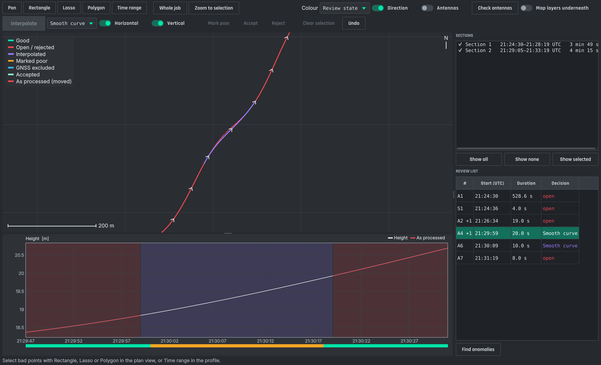
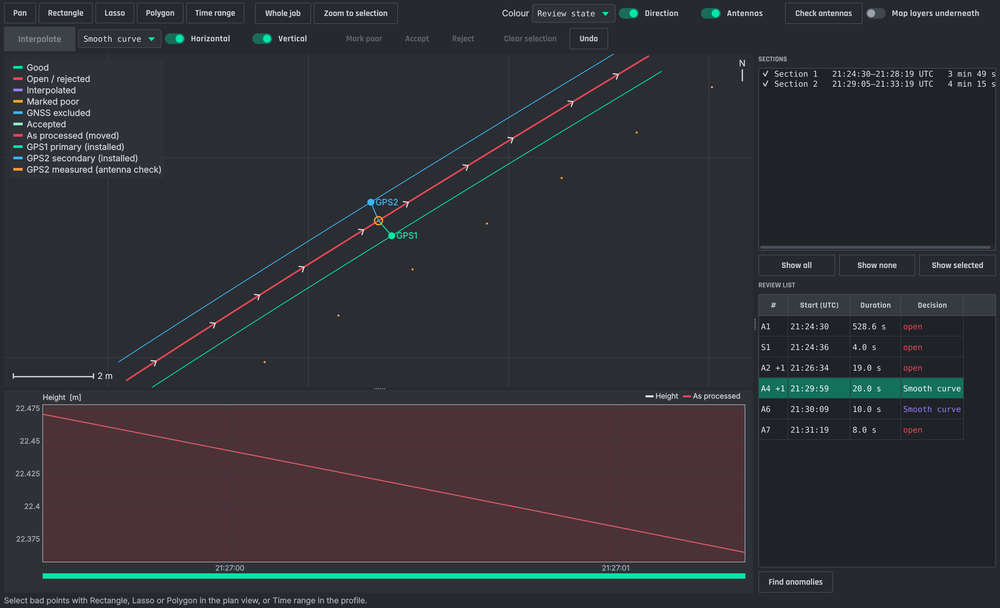
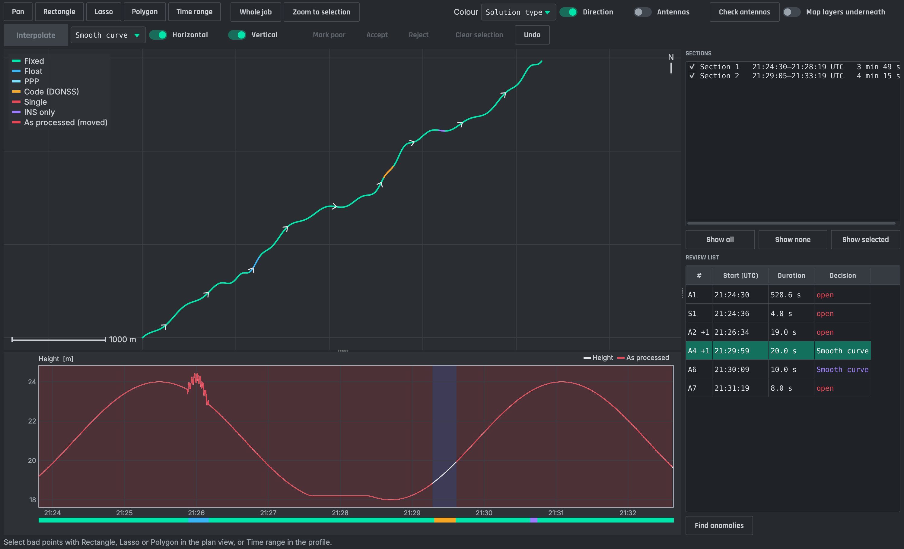
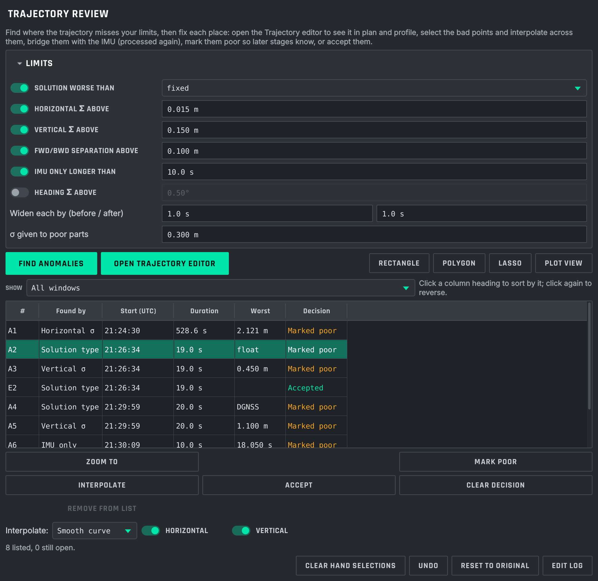
Select one row or several, then:
| Decision | Effect | Applies |
|---|---|---|
| Exclude GNSS | GNSS is not used in these windows; the IMU carries the trajectory, as through a tunnel. Use it where multipath or a wrong fix pulled the trajectory away. Tightly and loosely coupled only. | After Process again; a note in amber says the exclusions are waiting, and the Review step reads process again |
| Mark poor | The trajectory is kept, but its position σ is raised to at least σ given to poor parts, in the SMRMSG file, on the Quality page and in the published trajectory, so later stages know not to trust it. | At once |
| Interpolate | Replaces the positions between the good samples on both sides, as a Smooth curve or a Straight line, Horizontal and/or Vertical, in any processing mode (see The Trajectory editor). For longer stretches of a coupled trajectory, Exclude GNSS usually follows the road better. | At once |
| Accept | Looked at and fine as it is. | At once |
| Clear decision | The window is open again. | At once |
Decisions never change the processed result itself: PosPro keeps an untouched copy and applies your decisions to it, so Undo (the last change), Reset to original (every decision removed, after a question) and processing again lose nothing. After a decision that changes the trajectory, the Quality page, the map and the plots are updated and the trajectory is published again. Edit log lists every detection and decision with its time.
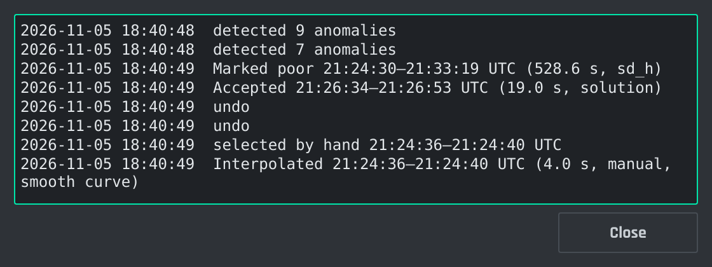
The Review step shows find anomalies before the first search, N open in amber while windows are undecided, process again while GNSS exclusions wait, and N reviewed in green when all are decided.
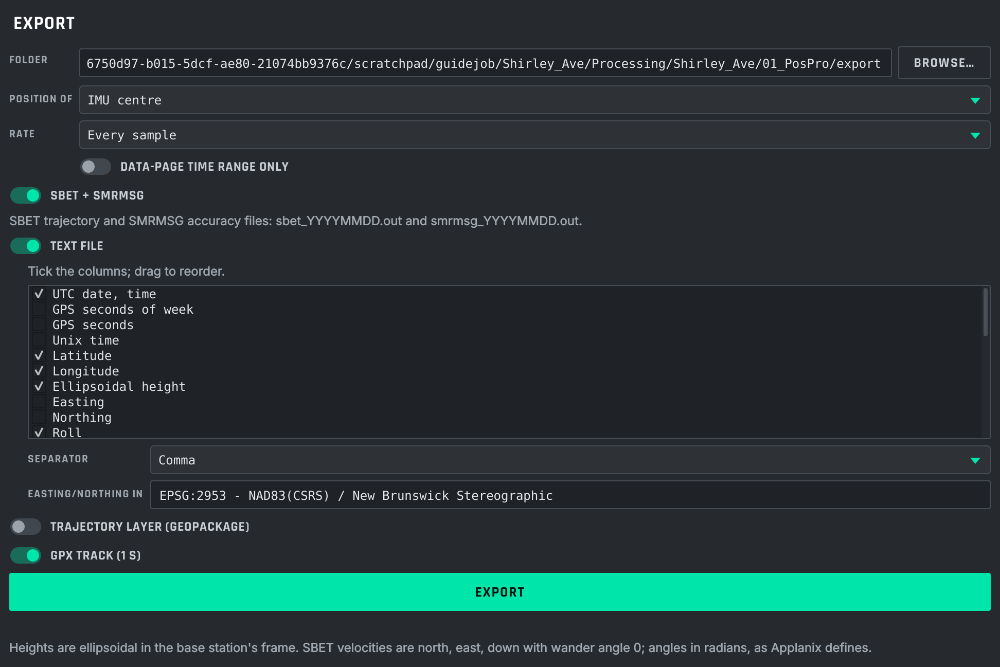
| Setting | What it does |
|---|---|
| Folder | Where the files go; by default 01_PosPro/export in the project. Browse… opens a folder picker. |
| Position of | IMU centre (the Certus reference point), the output point from the Installation page (by its name, when its offset is not zero), or GNSS antenna (GPS1). |
| Rate | Every sample, 200, 100, 50, 10 or 1 Hz. |
| Data-page time range only | Export only the time range set on the Data page. |
| SBET + SMRMSG | The trajectory and its accuracy: sbet_YYYYMMDD.out and smrmsg_YYYYMMDD.out. |
| Text file | <project>_YYYYMMDD.txt with the columns you tick, in the order you drag them to: UTC date, time; GPS seconds of week; GPS seconds; Unix time; Latitude; Longitude; Ellipsoidal height; Easting; Northing; Roll; Pitch; Heading; Velocity N, E, D; Speed; σ North, East, Down; σ Roll, Pitch, Heading; Solution type; Satellites; Separation H, V. Separator: Comma, Tab, Space or Semicolon. Easting/northing in: a transverse Mercator, UTM or stereographic system (EPSG:2953, NAD83(CSRS) / New Brunswick Stereographic, by default). |
| Trajectory layer (GeoPackage) | <project>_trajectory.gpkg: the Trajectory map layer (one point per second with its quality attributes). |
| GPX track (1 s) | <project>_trajectory.gpx: the trajectory at the Certus reference point, one point per second, with ellipsoidal heights. |
Press Export; the files written are listed under the button, and the Export step turns green (exported and the time) until the trajectory is processed again. Every export also writes <project>_export_note.txt, which records the project, when and how it was processed, the frame and epoch, the base and its position source, the heights, the time system, the exported point and its offset, and the attitude frame. Keep it with the files.
| File | Content |
|---|---|
sbet_YYYYMMDD.out | 17 little-endian doubles per record: GPS seconds of week, latitude, longitude (rad), ellipsoidal height (m), velocity north, east, down (m/s), roll, pitch, heading (rad), wander angle (0), body accelerations, body angular rates. |
smrmsg_YYYYMMDD.out | 10 doubles per record: GPS seconds of week, σ north, east, down (m), σ velocity north, east, down (m/s), σ roll, pitch, heading (arc-minutes). |
<project>_YYYYMMDD.txt | One header line with the column names, then one line per sample. |
Heights are ellipsoidal, in the frame of the base station's position (for PPP: ITRF2020 at the observation date; for the real-time mode: the frame of the Certus real-time solution, that is of the RTK corrections used in the field). Apply the geoid in the point-cloud processing. SBET velocities are north, east, down with wander angle 0; angles are in radians. Use the same reference point in the point-cloud processing as in the export.
At the end of every processing run, and after every review decision that changes the trajectory, PosPro publishes the trajectory in 01_PosPro/out/. You do not need the Export page for AlignPro and CloudPro: they read these files.
| File | Content |
|---|---|
trajectory_sbet.out | SBET at the Certus reference point (IMU centre), every sample |
trajectory_smrmsg.out | SMRMSG for the same samples (σ raised where you marked parts poor) |
trajectory_qc.csv | The 1 Hz quality table (position, attitude, velocity, σ, separation, solution type, satellites, gap, IMU biases) |
trajectory.json | The description of the trajectory, written last (schema dcs.trajectory/1) |
| Field | Holds |
|---|---|
schema, id, producer, created, project | dcs.trajectory/1; a content id of the data files (the later stages use it to see whether they are out of date); PosPro and engine versions; time; project name |
built_from | The captures (by fingerprint) and the shared settings the trajectory was made from |
files | sbet, smrmsg, qc |
time | System GPS, GPS week, leap seconds, start and end (GPS seconds), SBET time as GPS seconds of week |
frame | Frame name and epoch (that of the base position); for a real-time trajectory, the frame of the Certus's RTK corrections; heights ellipsoidal |
reference_point, body_frame | Certus reference point (IMU centre), offset 0, 0, 0; Certus aligned vehicle frame: X forward, Y starboard, Z down; roll + starboard down, pitch + bow up, heading + clockwise |
levers_m | GNSS 1 and GNSS 2 offsets (with their source, and whether GNSS 2 was used), the Lidar offset from the capture's hardware.json |
rate_hz | The rate of the published SBET, measured from its time stamps |
quality | Method, positioning, % fixed, % IMU only, separation (95 %), largest horizontal and vertical σ |
base_station | The base used |
review | The Trajectory Review decisions (GNSS excluded, reduced quality with its σ, interpolated, accepted windows) and the limits used |
attitude | For GNSS-only trajectories only: attitude not observed (roll and pitch 0, heading from the direction of travel) |
When you change something the trajectory depends on (the coordinate frame, the base station, the antenna offsets) or a capture changes, the PosPro box turns ⚠ stale in every plugin, and AlignPro and CloudPro show that their results are older than the trajectory. Process again to bring the chain up to date.
| Message | What to do |
|---|---|
| add the rover files (.anpp or .clraw) first / rover file not found: … | Add the files on the Data page; if the job folder moved, use Raw data moved? Relocate the job folder…. |
| no raw IMU (packet 28) with valid time was found / no raw satellite observations (packet 60) were found | The Certus did not record these packets. Only the real-time mode can run on these captures. Set the Certus outputs on the mapper for the next capture. |
| Read the rover files (Data). / Add a base station (Base stations). | Shown by Process when a step before it is missing. |
| the base station … has no position yet | Enter or compute the base position on the Base page. |
| tight coupling needs a base station; for PPP choose "Loosely coupled" | PPP works with loose coupling or GNSS only. |
| no navigation (ephemeris) data: connect to the internet or add a RINEX navigation file on the Data page | Turn on Download broadcast ephemeris with internet, or add a navigation file. |
| navigation file …: N orbits disagree with the INS's own and the IGS broadcast orbits … and are left out (…) | That file holds wrong orbits for those satellites. PosPro already left them out; take the file out of the base folder so it is not used again. |
| the solution ran away: its σ reached … km | Processing stopped: the trajectory cannot be used, and Trajectory Review cannot repair it. Check the warnings above it: a bad navigation file, a wrong base position (compare the PPP result with the RINEX header position or CSRS-PPP), or IMU data that did not arrive in full. Fix the cause and process again. |
| the largest σ is … m | A warning: look at the quality plots before using the trajectory. |
| broadcast ephemeris for … not downloaded (…) | A warning: PosPro goes on with the files you supplied and the rover's GPS ephemeris. |
| no precise orbit/clock found for … | Final products appear about two weeks after the day, rapid ones after about a day. Try again later, or use CSRS-PPP. |
| antenna calibrations (igs20.atx) not available | Base antenna phase-centre variations are not applied; connect to the internet once so the file is cached. |
| the base files … list different observation types; add them as separate base stations | Add each file as its own base. |
| the base file is only … h long | PPP is good to a few cm only after 2 h; use a longer file or CSRS-PPP. |
| CSRS-PPP needs the e-mail address you use as your NRCan user name | Enter it under E-mail. |
| the rover files hold no real-time solution (packet 20) | The real-time mode cannot run on these captures. |
| GPS2 could not be measured (no GPS2 observations, baseline did not fix) | Record a few minutes with both antennas in the open, or enter GPS2 by hand. |
| the lever-arm solver needs tight coupling / the filter did not report lever arms | Process tightly coupled with a base, with most of the drive fixed. |
| Easting/northing: choose a transverse Mercator, UTM or stereographic system | Choose such a system on the Export page. |
| process the project first | Export needs a processed trajectory. |
| … is being processed by … on … since … | Another QGIS is processing this stage of the project. Wait for it to finish. |
| …% of the IMU samples are missing (… gaps, the longest … s): the INS stream did not arrive in full | The recording has holes. PosPro bridges short gaps; for the next capture record with mapper 2.10.1 or later and lower the output rates (Recording settings). |
| the IMU's aligned frame is … deg (pitch) / … deg (yaw) off the vehicle | The INS alignment set in the Certus does not match how it is mounted. PosPro allows for it (the offset is estimated while driving); correct the alignment in the Certus so its real-time solution benefits too. |
| The processing engine is missing | Reinstall PosPro. On Windows, allow pospro-engine.exe if your security software asks. |
| The user guide is missing from this installation; reinstall PosPro. | Reinstall PosPro. |
| What you see | Likely cause | What to try |
|---|---|---|
| Fixed below 75 % | Base far away (over 40 km), poor sky | A nearer base; Atmosphere on Automatic or Always; a higher elevation mask |
| Large separation at the start or end only | Vehicle parked: heading cannot be resolved without motion | Drive a few turns before and after the survey; use both antennas |
| Large separation in a long gap | IMU drift both ways | Expected; check the σ plot over the gap; the wheeled-vehicle constraint and the rear axle offset help |
| Everything offset by the same amount | Base position from the RINEX header, or the wrong frame or epoch | Set the base position (CSRS-PPP) |
| Trajectory tilts or swings in turns | Wrong antenna offset or rear axle offset | Check the Installation drawing; solve the lever arms |
| Setting | Default |
|---|---|
| Frame | NAD83(CSRS), epoch 1997.0 (until a base position sets it) |
| Method / positioning / passes | Tightly coupled / PPK / forward and backward |
| Constellations, mask, ratio | GPS, GLONASS, Galileo, QZSS; 12°; 3.0 |
| Ambiguities, frequencies, atmosphere, SNR weighting | Fixed; dual; automatic; on |
| Wheeled vehicle constraint, zero velocity, rate | On; on; IMU rate |
| Alignment, speed, gate, max base gap | Automatic; 4 m/s; χ² 9; 60 s |
| IMU, vehicle | Certus Evo; Van (or the vehicle recorded in the capture) |
| Export | IMU centre, every sample, SBET + SMRMSG |
| Review limits | See Trajectory Review |
Path (in Processing/<Name>/01_PosPro/) | Holds |
|---|---|
pospro.json | PosPro's settings, bases, results summary and review decisions |
work/extract/ | The data read from the captures (IMU, observations, real-time track, coverage, hardware record) |
work/base/ | Downloaded and prepared base files, base PPP |
work/gnss/, work/ins/ | GNSS solutions, inertial passes and their settings |
work/results/ | The combined trajectory, its quality table and their untouched copies for Trajectory Review |
out/ | The published trajectory for AlignPro and CloudPro |
export/ | Exports (default folder) |
The first field test (3 Nov 2026, mapper 2.9.0) lost 31 % of the Certus stream in 357 gaps of up to 1.4 s. PosPro bridges short gaps, and the Data step reports how much IMU data is missing, but a clean recording is always better. Two causes add up: the mapper's computer, busy recording the Lidar, could drop network packets, and the Certus stream then stalls and the Certus throws data away while it waits (mapper 2.10.1 reduces that load); and the outputs asked for about 69 KB/s, close to what came through. When the Data step reports missing IMU samples, record with mapper 2.10.1 or later and lower the output rates:
| Packet | What PosPro uses it for | Setting |
|---|---|---|
| 20 System state | time for every IMU sample, real-time solution | 5 ms (200 Hz), keep |
| 28 Raw sensors | the IMU data | 5 ms (200 Hz), keep |
| 60 Raw satellite data | GNSS observations of both antennas | 1000 ms (matches a 1 s base); 500 ms if the check below stays clean |
| 61 Ephemeris; 185, 196 offsets | orbits; installation and dual-antenna offsets | as the Certus sends them |
| 29 Raw GNSS fix | not used for post-processing | 100 ms or off |
| 26 Euler standard deviation | not used | off |
With these settings the stream is about 37 KB/s. Check after the next drive: the Data step should report under 1 % missing IMU samples.
| Version | Changes |
|---|---|
| 1.8.0 | Check antennas (Installation page and Trajectory editor): measures where GPS2 really was relative to GPS1 while driving straight, using the direction of travel rather than the Certus heading, and says whether the antennas match the installation or look swapped; one click then swaps the offsets and aligns from motion. Trajectory editor: Direction chevrons along the track, Antennas (GPS1 and GPS2 drawn along the track, and the vehicle at the point under the mouse) and the measured GPS2 positions. The QGIS map's trajectory and real-time lines show arrowheads in the direction of travel. |
| 1.7.0 | Trajectory editor: the trajectory in plan and in a height profile side by side, linked both ways – hover or click in one and the other shows the same moment, select bad points in either (rectangle, lasso, polygon, time range) and fix them there. Interpolate now works in every processing mode, as a smooth curve (follows bends) or a straight line, horizontally and/or vertically, also at the start or end of the trajectory. New decision Reject (bad, to fix later). See Trajectory Review. |
| 1.6.3 | When DCS Core is updated while QGIS is running, PosPro says to restart QGIS instead of asking for an update. |
| 1.6.2 | Installation: IMU mounting correction – the pitch and yaw of the vehicle against the IMU, as a start for the estimate or held fixed, and Use the values from the last processing. Trajectory Review: a Show filter and sorting by any column. |
| 1.6.1 | Navigation files next to the base observations, and files you add, are checked orbit by orbit against the Certus's own orbits and the IGS broadcast orbits before processing; orbits that disagree are left out and a warning names the file and the satellites (see Data). Processing stops with a clear error when the solution runs away (σ above 1 km) instead of handing over an unusable trajectory. Trajectory Review: Remove from list and Clear hand selections; one drawing on the map adds one window (or a few), not one per piece; hand selections from before are taken off the list when you process again, and the anomalies are found again on the new trajectory with your limits. |
| 1.6.0 | Guided steps: a ‹ Back / Next › bar under the pages says whether each step is done and what to press, and Continue in AlignPro › on the last step once the trajectory is published (see The PosPro window). The version number is shown after the plugin name in the header. Fix (DCS Core 1.5.1): QGIS 4 on Windows no longer closes when you click in a floating window. Needs DCS Core 1.6.0. |
| 1.5.3 | Fixes from the first real field test: a cycle slip on a signal that returns after a short dropout is caught (it could pull a fixed solution metres off); short losses of IMU data are bridged and the Data step reports how much is missing; the offset between the vehicle and the IMU's aligned frame is estimated while driving and reported; tightly coupled passes start from the fixed GNSS-only position. On the test drive: under 35 % fixed before, 99.8 % now. New: Recording settings. |
| 1.5.2 | Fix: no more "unclosed file" warnings in the QGIS log after processing. |
| 1.5.1 | Mapper 2.10 projects: a new project offers the navigation recordings (recommended) or the survey lines; rover files are read in recording order; a navigation recording's hardware record is completed from a survey line. Needs DCS Core 1.4.0. |
| 1.5.0 | The same header as AlignPro and CloudPro: logo, the plugin name, the workflow boxes beside it, the project box on the right, then the Window button and the user guide button. The window title is just PosPro. The vehicles are the mapper's (Van, Truck, Car) and set the wheel constraints; the separate motion-constraints list is gone (older projects keep what they processed with). Captures without raw IMU take their time span from the real-time solution, and a real-time trajectory is published with the frame of the Certus RTK corrections and its own rate. This guide, rewritten with screenshots of this version. Needs DCS Core 1.3.0. |
| 1.4.0 | Named just PosPro. Opens in DCS Core's standard window: floating the first time, docked only when you choose it from the Window menu; dragging never docks it. It comes back as you left it, also after QGIS restarts; Reset window returns to the default. The quality plots open in the same kind of window. Neutral graphite look with lighter view backgrounds. |
| 1.3.x | Trajectory Review (Review). The real-time mode (the Certus solution, no base station). GPX export. The user guide is installed with the plugin. |
| 1.2.x | Part of the DCS chain (needs DCS Core): projects in the job folder, the trajectory published for AlignPro and CloudPro, workflow boxes with out-of-date results, relocating a moved job folder, saving the QGIS project in the project folder. Older .pospro.json projects still open. |
| 1.1.x | Tight coupling with both antennas, atmosphere estimation, signal-strength weighting, lever-arm solver, base-station finder, Installation filled from the capture, data coverage bars, Measure GPS2 from the data. |
Every button, setting and term with the section that explains it (chapter.section).